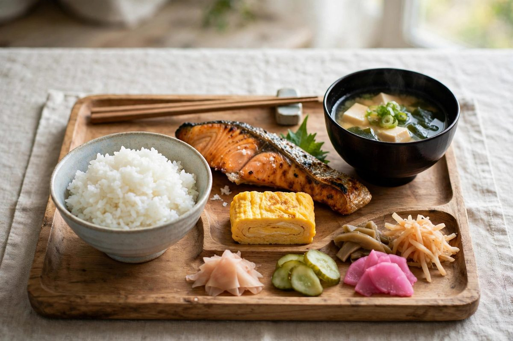

Japanese Breakfast — How to Start the Day the Japanese Way
What a traditional Japanese breakfast looks like, and how to make a simple version at home on a weekday.
What a Japanese breakfast is
A traditional Japanese breakfast is a small, balanced meal of rice, miso soup, grilled fish, and a few small side dishes, often with pickles and a raw or soft egg. It looks very different from a Western breakfast of cereal or toast, but it follows the same ichiju-sansai pattern as other Japanese meals: one soup, three dishes, and rice. It is savoury rather than sweet, light rather than heavy, and it keeps you full for hours without a sugar crash. It takes more preparation than pouring cereal, but a simplified version is practical on a weekday.
The core elements
The essentials are steamed rice, a bowl of miso soup, and a piece of grilled fish, usually salmon or mackerel. The fish is seasoned simply with salt and grilled until the skin is crisp. The miso soup is often made with tofu and wakame. Around these, add one or two small sides: a rolled omelette, simmered vegetables, natto (fermented soybeans), or a small salad. Pickles add a sharp, salty contrast. You do not need all of these every day; rice, soup, and one protein plus a pickle is a complete breakfast.
A quick weekday version
On a busy morning, simplify. Cook rice in a rice cooker the night before and keep it warm. Make miso soup in five minutes with instant dashi and miso paste. Grill a salmon fillet under the grill while the soup heats, or use leftover grilled fish from dinner. Add a boiled egg and a small portion of pickles. The whole meal takes about fifteen minutes, and most of it is hands-off. Preparing the fish and soup the night before makes it even faster: reheat gently in the morning and serve with fresh rice.
Eggs and natto
Eggs appear in Japanese breakfasts as tamagoyaki, a sweet rolled omelette, or as a soft-boiled egg, or as a raw egg over hot rice (tamago kake gohan). Tamagoyaki takes a little practice but is worth learning, and it keeps in the fridge for a day. Natto is an acquired taste: fermented soybeans with a strong smell and sticky texture, eaten over rice with soy sauce and mustard. It is very nutritious and popular in Japan, but many people outside Japan find it challenging. Try it once; if you do not like it, skip it without guilt.
What to drink
Green tea is the usual drink with a Japanese breakfast, served hot and unsweetened. It is light, refreshing, and pairs well with the savoury food. Some people drink miso soup as the warm drink and skip tea. Coffee is also common in modern Japanese homes, especially with a Western-style breakfast of toast and eggs. Avoid sugary drinks and juice, which clash with the savoury meal and add a sugar spike to a breakfast designed to be steady.
Why it works
A Japanese breakfast works because it is balanced: protein from fish and egg, fibre from vegetables and pickles, and slow carbohydrate from rice. It avoids the sugar and refined flour that make many Western breakfasts leave you hungry by ten o'clock. It also starts the day with vegetables, which most people struggle to eat enough of. You do not need to eat a Japanese breakfast every day to benefit; even once or twice a week adds variety and balance to your mornings. Start with the simple version, and add dishes as the routine becomes familiar.
Frequently Asked Questions
What is a typical Japanese breakfast?
Steamed rice, miso soup, grilled fish, and a few small sides such as egg, vegetables, or pickles. It is savoury, balanced, and follows the one-soup, three-dishes pattern.
Is a Japanese breakfast healthy?
Yes, generally. It is rich in protein, fibre, and vegetables, low in sugar, and based on whole foods. Watch the salt in pickles and soy sauce if that is a concern for you.
Can I make a Japanese breakfast quickly on weekdays?
Yes. Use a rice cooker, instant dashi for miso soup, and grilled fish or a boiled egg. The simplified version takes about fifteen minutes.